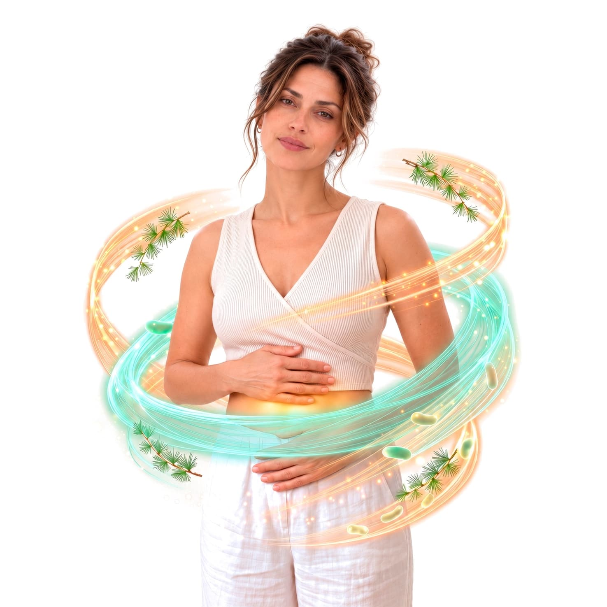
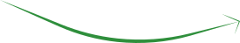
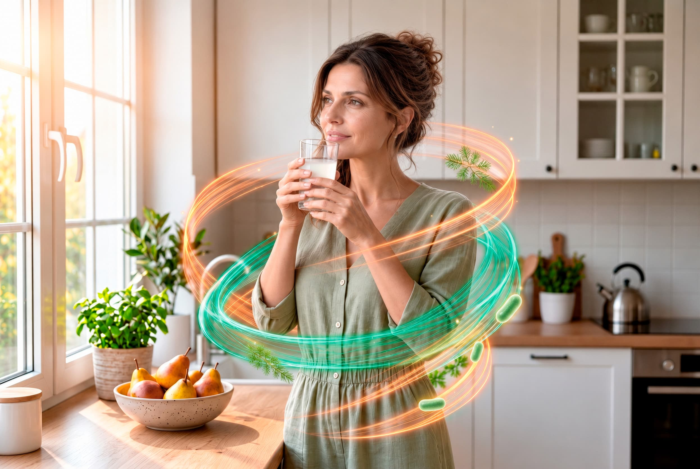
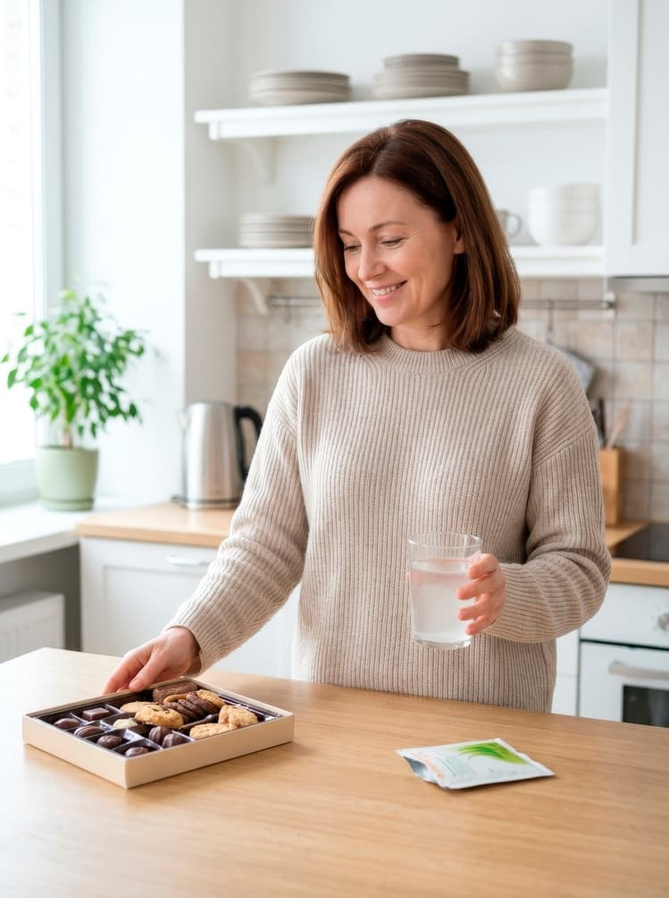
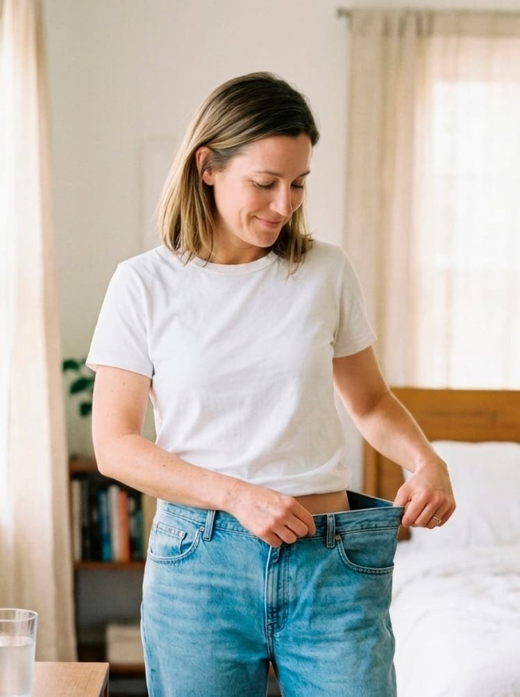
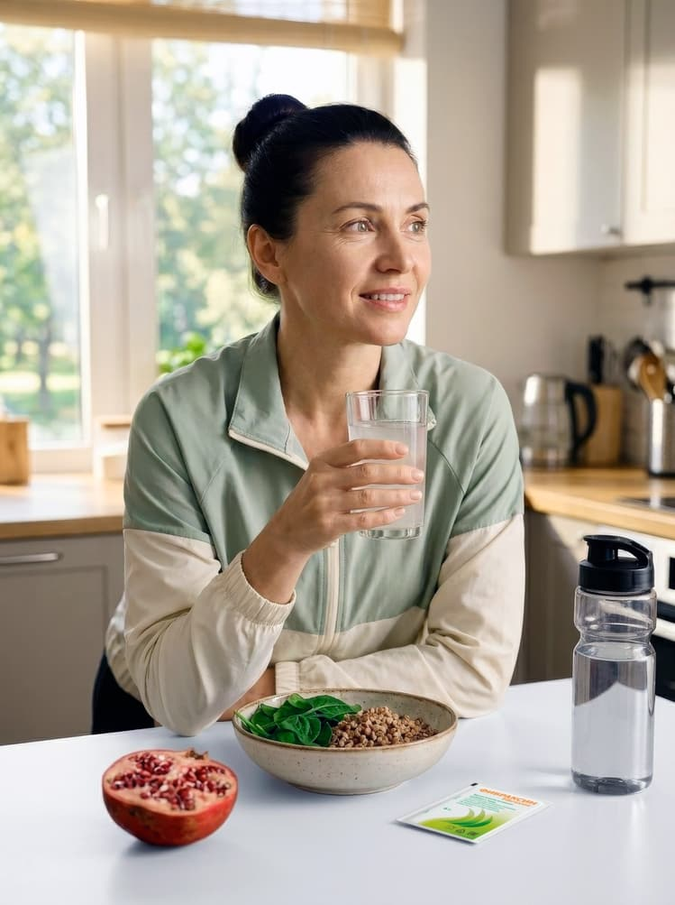
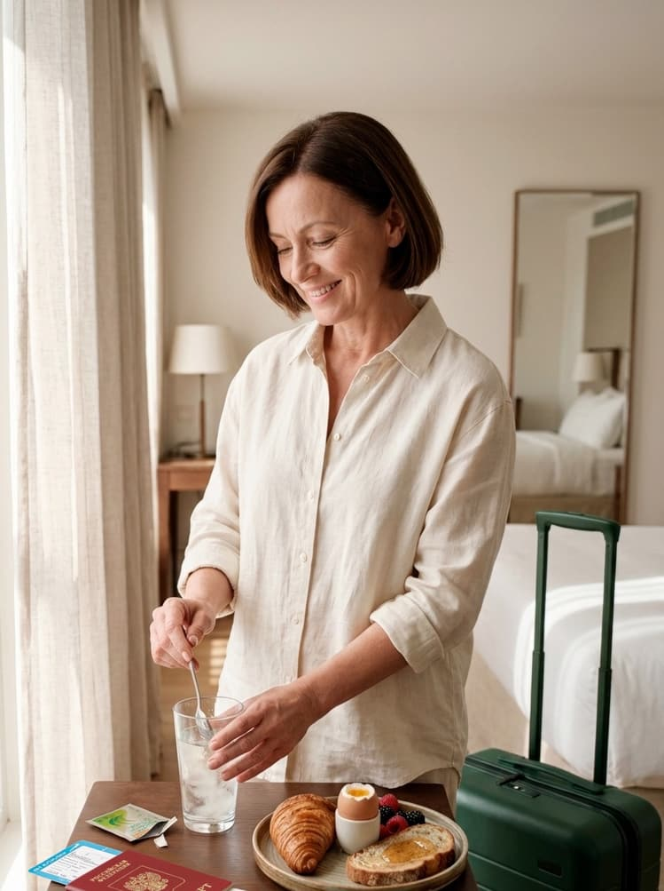

Лусинэ
«Классное средство, через месяц кишечник работает как по часам, ещё и похудела на 3 кг!»
Смотреть на apteka.ruВключи простую* поддержку организма в фоновом режиме
Без лишнего контроля
*1 раз в сутки


Как компоненты Фибраксина поддерживают комфорт, стабильность и ощущение лёгкости
Полностью растворимая клетчатка из коры лиственницы. Является пищей для полезной микрофлоры и поддерживает её рост. Тем самым способствует регуляции моторики и поддержанию нормальной функции кишечника.
Железосодержащий белок, который способствует: росту полезной микрофлоры и поддержанию защитного иммунного барьера в кишечнике, регуляции всасывания и усвоения железа.

Компоненты Фибраксина, действуя комплексно, поддерживают организм в фоновом режиме. Аппетит, кишечник и внутреннее ощущение лёгкости — всё под контролем
За счёт комбинации арабиногалактана и лактоферрина Фибраксин помогает восстановить баланс микрофлоры, поддерживая таким образом нормальную работу кишечника, обмен веществ и аппетит
Способствует комфорту кишечника и нормализации его естественной функции без спазмов и вздутия
Способствует контролю и стабильности аппетита за счёт выработки метаболитов физиологического насыщения
Содержит лактоферрин, регулирующий всасывание и усвоение железа

Лёгкость
внутри
Когда баланс внутри,
контроль не нужен
1 Н. В. Бакулина, И. Г. Бакулин, С. М. Захаренко, С. И. Ситкин, Ю. Ш. Халимов (2026). Управление кишечной микробиотой как адъювантная стратегия вес-редуцирующей терапии, включая агонисты рецепторов глюкагоноподобного пептида 1 и глюкозозависимого инсулинотропного полипептида: роль арабиногалактана и лактоферрина. Эффективная фармакотерапия, 22 (4), 58–66. doi: 10.33978/2307-3586-2026-22-4-58-66
Принимайте Фибраксин во время любого удобного приёма пищи


 Шаг 1Развести
Шаг 1Развести Шаг 2Перемешать
Шаг 2Перемешать Шаг 3Принять
Шаг 3ПринятьКурс, который легко впишется в любой график
Не менее 1 месяца
Укажите, сколько порций из каждой группы продуктов вы съедаете в среднем за неделю — передвигайте ползунки. Результат пересчитывается сразу: сколько пищевых волокон (ПВ) вы получаете из питания в неделю и в день и какой это процент от нормы (30 г/сутки)
Порций в неделю
Укажите количество порций хотя бы по одной группе.

Чем Фибраксин дополняет рацион
Больше, чем просто клетчатка
1 саше в день — 5,5 г арабиногалактана. В расчёт и на шкалу не входит — калькулятор считает только питание.
Где купитьО комфорте кишечника, контроле аппетита и лёгкости в теле без лишних усилий
Лусинэ
«Классное средство, через месяц кишечник работает как по часам, ещё и похудела на 3 кг!»
Смотреть на apteka.ru
Светлана
«Отличный пребиотик, который не только нормализует микрофлору, останавливает диарею и убирает запор, но и очищает лицо от прыщей у подростков, а также помог нам при анемии. Суперсредство для всей семьи, которое всегда в нашей аптечке.»
Смотреть на apteka.ru
Наталия Тютина
«Выписал врач для восстановления микрофлоры кишечника. У меня дивертикулярная болезнь, нужно пить его каждые три месяца. Отличный препарат, хорошо разводится в воде, вкус нейтральный. Мне помогает. Рекомендую.»
Смотреть на zdravcity.ru
Светлана Н.
«Всегда держу в аптечке, так как это палочка-выручалочка для всей семьи для нормализации стула (останавливает диарею или убирает запор), у ребёнка-подростка и взрослого очищает кожу лица от прыщей (делает прямо бархатистой). Сейчас заказываю систематически плюсом для мамы, у которой анемия, для дополнительного комплексного лечения по рекомендациям доктора.»
Смотреть на ozon.ruЗаказывайте с доставкой до двери или бронируйте в ближайшей аптеке
Препарат продаётся в аптеках и на маркетплейсах. Это оригинальный европейский продукт, поставляемый напрямую от производителя
Скидки и спецпредложения в аптеках-партнёрах — собрали их на одной странице


Как поддержать организм в разных ситуациях

ЧТО БЕСПОКОИТ:
Тяга к сладкому, вечерние срывы, перекусы от скуки или стресса.
РЕШЕНИЕ:
Волокна арабиногалактана медленно ферментируются в ЖКТ и способствуют стимуляции выработки естественных гормонов насыщения. Это помогает спокойно выдерживать паузы между едой без чувства голода.

ЧТО БЕСПОКОИТ:
Запор или нерегулярный стул, спазмы и вздутие на фоне медикаментозного снижения массы тела.
РЕШЕНИЕ:
Мягко способствует восстановлению моторики без спазмов, диареи и привыкания, помогает ЖКТ адаптироваться к новому режиму питания.

ЧТО БЕСПОКОИТ:
Несбалансированное питание с дефицитом клетчатки, стресс, упадок сил и склонность к анемии.
РЕШЕНИЕ:
Арабиногалактан закрывает потребность кишечника в качественных пребиотических волокнах, а природный белок лактоферрин способствует укреплению барьера слизистой и оптимизирует обмен железа.

ЧТО БЕСПОКОИТ:
Резкая смена условий жизни, частые поездки, малоподвижный образ жизни и вынужденное питание полуфабрикатами.
РЕШЕНИЕ:
Пребиотик способствует поддержанию числа полезных бифидо- и лактобактерий, а лактоферрин способствует укреплению барьера слизистой, что успокаивает раздражённый кишечник.
ЧТО БЕСПОКОИТ:
Сидячая работа из дома, мало движения, перекусы у компьютера и нерегулярное питание.
РЕШЕНИЕ:
Надёжность формулы подтверждена в изоляционном эксперименте SIRIUS (ИМБП РАН): комплекс способствовал сохранению баланса нормофлоры и моторики ЖКТ у экипажа в условиях герметичной изоляции и специального рациона.
Всё, что важно знать о составе, приёме и действии Фибраксина
За счёт нормализации кишечной микробиоты1. Полезные бактерии расщепляют (ферментируют) пищевые волокна с образованием короткоцепочечных жирных кислот, которые естественным путём влияют на передачу головному мозгу сигнала сытости. Это влияет на снижение аппетита, тяги к перекусам и сладкому2.
Да. Формула не содержит сахарозы, лактозы, глютена и ГМО, поэтому подходит тем, кто соблюдает диету или следит за уровнем сахара.
В составе Фибраксина нет сенны и слабительных, поэтому продукт не провоцирует эффект «ленивого кишечника» и не приводит к синдрому отмены. Базовый рекомендуемый курс — от 4 недель. При необходимости он может быть более длительным, и его можно повторять в течение года3.
Лактоферрин — это натуральный железосодержащий защитный белок. В кишечнике он выполняет сразу две задачи: способствует нормализации баланса микрофлоры и поддержанию защитных свойств слизистой оболочки5.
Он способен перехватывать свободное железо, которым питаются вредные бактерии. Без него патогенная флора теряет силу и не может расти, поэтому полезные бактерии спокойно развиваются.
Лактоферрин связывает и доставляет это железо прямо в клетки кишечника. Организм получает микроэлемент естественным путём, а стенки ЖКТ не страдают от раздражения, как это часто бывает при обычном приёме железа. Эффективность белка подтверждают научные работы: исследование4 итальянских учёных из Римского университета Сапиенца и обзор5 исследовательской группы Мельбурнского королевского технологического университета.
Фибраксин практически нейтрален и полностью растворим в воде. Вы можете разводить его в воде, несладком напитке, натуральном соке или йогурте.
Да, полностью. Растворимый арабиногалактан не связывает минералы, в том числе железо, и не мешает их всасыванию, в отличие от некоторых высоковязких пищевых волокон, таких как псиллиум, который рекомендуется разносить по времени приёма с лекарственными препаратами и нутриентами. Более того, лактоферрин в составе физиологически способствует безопасному транспорту и усвоению железа клетками слизистой оболочки кишечника.
В отличие от более грубой клетчатки (отрубей, псиллиума), которая активно впитывает воду и при её недостатке может вызывать запоры, арабиногалактан растворяется в напитке и не требует дополнительного питьевого режима. Достаточно обычной суточной нормы жидкости. Но если вы склонны к запорам, поддержание адекватного питьевого режима в любом случае полезно для работы кишечника.
Пребиотик Фибраксин работает не мгновенно — он поддерживает рост собственной полезной микрофлоры, а это процесс накопительный. Ощутимые изменения в работе кишечника — нормализация стула, уменьшение дискомфорта — могут появиться к концу второй — третьей недели регулярного приёма. Полный базовый курс составляет не менее четырёх недель, но может быть и более длительным.
Обычные отруби и нерастворимая клетчатка работают «механически» — набухают, увеличивают объём кишечного содержимого и стимулируют перистальтику. При этом они могут связывать и выводить минералы (железо, цинк, кальций), вызывать вздутие и требуют повышенного употребления воды. Арабиногалактан в Фибраксине — полностью растворимое и ферментируемое пищевое волокно: он не связывает минералы, не вызывает газообразования и работает как пребиотик, то есть питает полезную микрофлору, которая сама может восстанавливать баланс и нормальную функцию кишечника.
Фибраксин низкокалориен. Растворимые пищевые волокна не усваиваются организмом напрямую — их расщепляют бактерии кишечника с образованием короткоцепочечных жирных кислот. В одном саше (6 г) содержится 5,5 г арабиногалактана и 50 мг лактоферрина. Продукт не содержит сахара, подсластителей, консервантов и красителей.